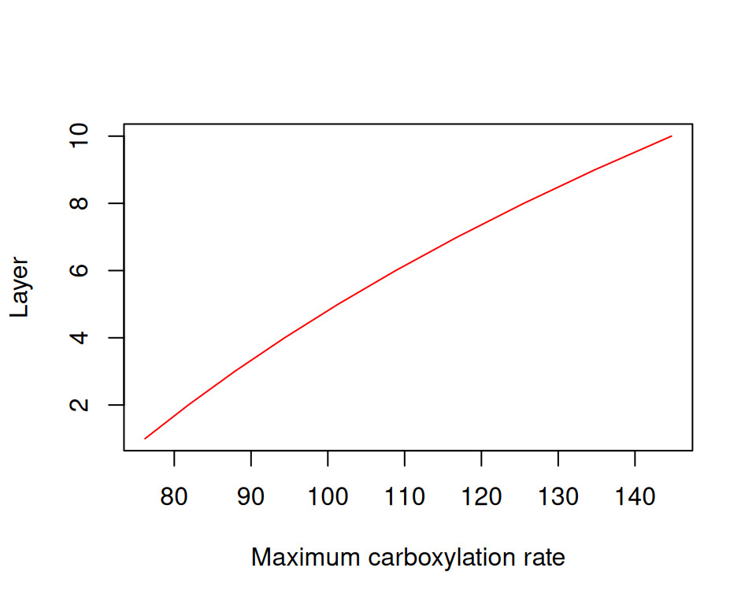

Chapter 17 Growth, senescence and mortality
17.1 Growth
17.1.1 Temperature and turgor sink limitations
Sink limitations due to temperature and turgor effects on growth are modelled following Cabon et al. (2020a) and Cabon et al. (2020b). These authors suggested equations to model sink limitations on cambium cell division and tracheid expansion, but we apply the same approach for simulating growth of leaves, sapwood and fine roots. Cell relative expansion rate (\(r_{cell}\)) is central to the approach by Cabon et al. and is defined as the relative time derivative of cell volume: \[\begin{equation} r_{cell} = \frac{dV}{Vdt} \end{equation}\] Cabon et al. (2020a) first suggested to model the dependence of \(r_{cell}\) on cell turgor using Lockhart’s equation: \[\begin{equation} r_{cell}(\Psi, \pi_0) = \phi_{max} \cdot (\Psi - \pi_0 - Y_{P}) \end{equation}\] where \(\Psi\) is the water potential, \(\pi_0\) is the osmotic water potential at full turgor, \(Y_P\) is the turgor yield threshold and \(\phi_{max}\) is the maximum cell wall extensibility. Later, Cabon et al. (2020b) suggested to account for both turgor and temperature limitations on \(r_{cell}\) using the following expanded equation: \[\begin{equation} r_{cell}(T, \Psi, \pi_0) = \phi_{max} \cdot (\Psi - \pi_0 - Y_{P}) \cdot \frac{f_{met}(T_K)}{f_{met}(288.15)} \cdot{f_{micro}(T, T_{thr})} \tag{17.1} \end{equation}\] where \(T\) is temperature, \(f_{met}(T_K)\) is a function modulating the effect of temperature \(T_K\) in Kelvin, on metabolic rate, and \(f_{micro}(T, T_{thr})\) is a sigmoidal function modulating the effect of temperature on microtubule stability, depending on a temperature threshold \(T_{thr}\). Function \(f_{met}(T_K)\) is defined as: \[\begin{equation} f_{met}(T_K) = \frac{T_K \cdot \exp \big\{ \frac{\Delta H_A}{R^n \cdot T_K}\big\}}{1 + \exp \big\{ \frac{\Delta S_D}{R^n} \cdot \left(1 - \frac{\Delta H_D}{\Delta S_D \cdot T_K} \right)\big\}} \end{equation}\] where \(R^n\) is the ideal gas constant, \(\Delta H_A = 87500\) the enthalpy of activation and \(\Delta H_D = 333000\) and \(\Delta S_D = 1090\) the enthalpy and entropy difference (respectively) between the catalytically active and inactive states of the enzymatic system).
Scaling from the cell to the tissue level is conducted by assuming that maximum cell-level expansion rates correspond to maximum tissue-level relative growth rates.
17.1.2 Leaf growth
Leaf area increment \(\Delta LA\) only occurs when phenological state is unfolding, and is defined as the minimum of three values expressing three corresponding constraints: \[\begin{equation} \Delta LA = \min( \Delta LA_{alloc}, \Delta LA_{source}, \Delta LA_{sink}) \end{equation}\] First, \(\Delta LA_{alloc}\) is the maximum leaf area increment allowed by the leaf area target set by the allocation rule, \(LA^{target}\), in comparison with current leaf area \(LA^{\phi}\): \[\begin{equation} \Delta LA_{alloc} = \max(LA^{target} - LA^{\phi},0) \end{equation}\] Remember that leaf area target is updated during bud formation (see 17.3.2).
Second, \(\Delta LA_{source}\) represents the leaf area increment expected given carbon source limitations and is calculated: \[\begin{equation} \Delta LA_{source} = \frac{ST_{sapwood}\cdot m_{gluc}\cdot V_{sapwood,leaf}}{1000 \cdot CC_{leaf} / SLA} \end{equation}\] where \(ST_{sapwood}\) is the current concentration of sapwood storage carbon (starch), \(V_{storage,sapwood}\) is the sapwood storage volume and \(m_{gluc}\) is glucose molar mass and the denominator contains the construction costs per leaf area unit, see eq. (16.2).
Finally, \(\Delta LA_{sink}\) represents the leaf area increment expected by taking into account the maximum leaf tissue growth rate relative to sapwood area (\(RGR_{leaf, max}\); in \(m^2 \cdot cm^{-2} \cdot day^{-1}\)) and the relative cell expansion rate given \(T_{day}\), \(\Psi_{symp,leaf}\) and \(\pi_{0,leaf}\): \[\begin{eqnarray} \Delta LA_{sink} &=& SA \cdot RGR_{leaf, max} \cdot \frac{r_{cell}(T_{day}, \Psi_{symp,leaf}, \pi_{0,leaf})}{r_{cell,max}} \\ &=& SA \cdot RGR_{leaf, max} \cdot \frac{(\Psi_{symp,leaf} - \pi_{0,leaf} - Y_{P}) }{(2 - Y_{P})} \cdot \frac{ f_{met}(T_{day})}{f_{met}(30)} \end{eqnarray}\] where cell relative expansion rate is divided by the maximum relative cell expansion rate \(r_{cell,max} = r_{cell}(30, 0, -2)\) so that \(RGR_{leaf, max}\) is attained when sink conditions are optimal. Other parameters for eq. (17.1) are \(\phi_{max} = 0.5\) (which becomes irrelevant), \(Y_{P} = 0.05\,MPa\) and \(T_{thr} = 5\)ºC. Note that the final expression of \(\Delta LA_{sink}\) reduces to a product of the maximum leaf area growth times two factors (for turgor and temperature) bounded between 0 and 1.
17.1.3 Sapwood growth
Sapwood area increment \(\Delta SA\) can only occur if \(LA^{live}>0\). Unlike leaf area or fine root biomass, it is not explicitly constrained by any allocation rule. However, newly assimilated carbon is preferentially allocated to leaves and fine roots whenever storage levels are low. \(\Delta SA\) is defined as the minimum of two values expressing source and sink constraints:
\[\begin{equation}
\Delta SA = \min(\Delta SA_{source}, \Delta SA_{sink})
\end{equation}\]
\(\Delta SA_{source}\) represents the sapwood area increment expected given carbon source limitations and is calculated using:
\[\begin{equation}
\Delta SA_{source} = \frac{\max(ST_{sapwood}-ST_{sapwood,growth},0)\cdot m_{gluc}\cdot V_{storage,sapwood}}{CC_{sapwood} \cdot (H + \sum_{s}{FRP_s \cdot L_s}) \cdot \rho_{wood}}
\end{equation}\]
where \(ST_{sapwood}\) is the current starch concentration, \(ST_{sapwood,growth}\) is the minimum starch concentration required for sapwood growth, \(V_{storage,sapwood}\) is the sapwood storage volume, \(m_{gluc}\) is glucose molar mass and the denominator contains the construction costs per sapwood area unit, see eq. (16.3). \(ST_{sapwood,growth}\) is related to the minimum relative starch concentration for growth (\(RSSG\)), which is specified via the species-specific parameter RSSG or the control parameter minimumRelativeStarchForGrowth. This parameter is important because it allows specifying to which extent a given plant species stops growth and saves carbon to ensure survival (e.g. shadow tolerant species), as opposed to a species strongly investing in growth to reach the top of the canopy and have access to high light levels (e.g. light-demanding species).
Sink limitations to sapwood growth are simulated using a set of \(N_c = 10\) cambium cells that undergo division and the new cells are added to a ring (i.e. a vector) of vessels that later suffer enlargement and maturation (Friend et al. 2019). Assuming that cambium cell volume must double before division, that cell-doubling time is the variable limiting cell division and that each division instantly results in a cell exiting the cambium and initiating differentiation into a vessel, production rate (\(PR_{cambium}\)) of new vessels cells can be related to the cambial cell expansion rate \(r_{cambium}\) such that (Cabon et al. 2020b): \[\begin{equation} PR_{cambium} = \frac{N_c}{ln(2)}\cdot r_{cambium} \end{equation}\] where \(r_{cambium} = r_{cell}(T_{day},\Psi_{symp,stem}, -0.8)\), with other parameters of eq. (17.1) being \(\phi_{max}=0.13\), \(Y_{P} = 0.05\,MPa\) and \(Y_{thr} = 8\) ºC. The ring growth model is implemented at daily time steps and daily \(PR_{cambium}\) values are accumulated (i.e. \(P_{cambium, t} = P_{cambium, t-1} + PR_{cambium,t}\)). A new vessel is formed and added to the ring every time \(P_{cambium}\) advances one integer. All vessel cells in the ring undergo daily enlargement following eq. (17.1), again with \(Y_{P} = 0.05\,MPa\) and \(Y_{thr} = 8\) ºC. During cell later stages of enlargement, the cell wall becomes thicker and more rigid as a consequence of cell wall deposition. Consequently, \(\phi_{max}=0.13\) for newly formed cells, but then variations in \(\phi_{max}\) are modelled as (Cabon et al. 2020a): \[\begin{equation} \frac{d\phi_{max}}{\phi_{max}\cdot dt} = s\cdot r_{cell} - h \cdot \frac{f_{met}(T_K)}{f_{met}(288.15)} \end{equation}\] where \(s = 1.8\) and \(h = 0.043\cdot1.8\) are a softening factor and a constant hardening rate, respectively, and the hardening rate is modulated by temperature effects. Cell radial diameter is initially \(8.3 \mu m\) and tangential diameter is assumed constant and equal to \(20 \mu m\), so that volume increases in ring cells can be translated to daily ring area increases, \(\Delta A_{ring}\) (in \(\mu m^{2}\)).
Assuming that the maximum relative sapwood growth rate (\(RGR_{cambium, max}\) or \(RGR_{sapwood, max}\)) corresponds to a maximum rate of daily ring area increase, we have that the daily increase in sapwood area according to sink limitations, \(\Delta SA_{sink}\), is defined as: \[\begin{equation} \Delta SA_{sink} = \pi \cdot DBH \cdot RGR_{cambium, max} \cdot \frac{\Delta A_{ring}}{\Delta A_{ring,max}} \end{equation}\] for trees, and as: \[\begin{equation} \Delta SA_{sink} = SA \cdot RGR_{sapwood, max} \cdot \frac{\Delta A_{ring}}{\Delta A_{ring,max}} \end{equation}\] for shrubs. Sapwood growth in trees is proportional to the cambium length (in cm), whereas in trees it is proportional to the current sapwood area (in cm2). Hence, two different maximum relative growth rates are defined for trees (\(RGR_{cambium, max}\)) and shrubs (\(RGR_{sapwood, max}\)). In the previous equations, \(\Delta A_{ring,max} = N_c \cdot 950\,\mu m^{2} \cdot day^{-1}\), which was obtained by simulating a ring growth under optimum temperature (\(T_{day} = 30\) ºC) and water (\(\Psi_{symp, stem} = -0.033\) MPa) conditions and observing the steady-state ring area increase.
17.1.4 Fine root growth
Fine root biomass increment is modelled for each soil layer separately, and is defined analogously to leaf area increment: \[\begin{equation} \Delta B_{fineroot} = \min( \Delta B_{fineroot,alloc}, \Delta B_{fineroot,source}, \Delta B_{fineroot,sink}) \end{equation}\] First, \(\Delta B_{fineroot,alloc}\) is the maximum fine root biomass increment allowed by the biomass target set by the allocation rule, \(B_{fineroot,target}\) (see 17.3.2), in comparison with current biomass, \(B_{fineroot}\): \[\begin{equation} \Delta B_{fineroot,alloc} = \max(B_{fineroot,target} - B_{fineroot},0) \end{equation}\]
Second, \(\Delta B_{fineroot,source}\) represents the biomass increment expected given the available storage carbon (starch): \[\begin{equation} \Delta B_{fineroot,source} = \frac{ST_{sapwood} \cdot m_{gluc}\cdot V_{storage,sapwood}}{CC_{fineroot}} \end{equation}\] where \(ST_{sapwood}\) is the current sapwood concentration of storage carbon, \(V_{storage,sapwood}\) is the sapwood storage volume, \(m_{gluc}\) is glucose molar mass and \(CC_{fineroot}\) is the construction costs per fine root biomass unit.
Finally, \(\Delta B_{fineroot,sink}\) represents the biomass increment expected by taking into account maximum tissue growth rate (\(RGR_{fineroot, max}\); in \(g\,dry \cdot g\,dry^{-1} \cdot day^{-1}\)) and the relative cell expansion rate given temperature (\(T_{day}\)), water potential in the rhizosphere (\(\Psi_{rhizo,s}\)) and the stem osmotic potential at full turgor(\(\pi_{0,stem}\)): \[\begin{eqnarray} \Delta B_{fineroot,sink} &=& B_{fineroot} \cdot RGR_{fineroot, max} \cdot \frac{r_{cell}(T_{day}, \Psi_{rhizo,s}, \pi_{0,stem})}{r_{cell,max}} \\ &=& B_{fineroot} \cdot RGR_{fineroot, max} \cdot \frac{(\Psi_{rhizo,s} - \pi_{0,stem} - Y_{P}) }{(2 - Y_{P})} \cdot \frac{ f_{met}(T_{day})}{f_{met}(30)} \end{eqnarray}\] cell relative expansion rate is divided by the maximum relative cell expansion rate \(r_{cell,max} = r_{cell}(30, 0, -2)\) so that \(RGR_{fineroot, max}\) is attained when sink conditions are optimal. Other parameters for eq. (17.1) are like for leaf growth, \(\phi_{max} = 0.5\), \(Y_{P} = 0.05\,MPa\) and \(T_{thr} = 5\)ºC.
17.2 Senescence
17.2.1 Leaf senescence
Leaf senescence can occur due to two processes: aging or dessication. Senescence due to advanced leaf age is assumed to be programmed (Ca+ accumulation?). In deciduous species all live leaf area turns to death leaf area when the phenology submodel indicates it (4.1.3). In evergreen species the proportion of leaf area that undergoes senescence each day is determined by the species-specific leaf duration parameter (\(LD\)): \[\begin{equation} p_{aging,leaf} = \frac{1}{365.25 \cdot LD} \end{equation}\] Senescence due to drought effects occurs as a consequence of stem cavitation. If the proportion of conductance loss has increased with respect to the preceeding day, the model determines the leaf area corresponding to the current level of cavitation: \[\begin{equation} LA^{cavitation} = (1 - PLC_{stem}) \cdot LA^{target} \end{equation}\] if \(LA^{cavitation} < LA^{\phi}\) then the corresponding proportion \(p_{cavitation, leaf}\) is estimated. The maximum of \(p_{aging,leaf}\) and \(p_{cavitation, leaf}\) is applied as a reduction of leaf area. If growth is simulated using the advanced water model, it also checks whether the relative water content in leaves becomes less than 50% (i.e. \(RWC_{leaf} < 0.5\)) and, if this happens, the plant cohort is completely defoliated.
17.2.2 Sapwood senescence
The daily rate of sapwood senescence is specified via the species-specific parameter \(SR_{sapwood}\) or, when missing, via a control parameter. Prentice et al. (1993) assumed a constant annual rate of 4% for the conversion from sapwood to heartwood. Similarly, Sitch et al. (2003) assumed a sapwood annual turnover rate of 5% for all biomes. In our model, the proportion of sapwood area that is transformed into heartwood daily is estimated using: \[\begin{equation} p_{aging, sapwood} = \frac{SR_{sapwood}}{1+15\cdot e^{-0.01\cdot H}} \cdot \frac{\max(T_{day}-5,0)}{20} \end{equation}\] where \(SR_{sapwood}\) is a species-specific parameter, \(T_{day}\) is the average day temperature and 0.01 is a constant causing shorter plants to have slower senescence rates. It is important to mention that, while stem cavitation \(PLC_{stem}\) reduces the amount of functional sapwood in with respect to hydraulics (and therefore transpiration and photosynthesis), it does not increase the rate of sapwood senescence. Hence, when xylem embolism occurs air bubbles are formed within vessels but surrounding parenchymatic cells (as well as the storage carbon they contain) are assumed unaffected.
17.2.3 Fine root senescence
Aging is the only process leading to fine root senescence. The daily turnover proportion for fine roots (\(SR_{fineroot}\)) is assumed to correspond to a temperature of 25 ºC, is specified via species-specific parameters or the control parameters turnoverRates. Actual turnover proportion for a given soil layer (\(p_{aging,fineroot}\)) decreases linearly with soil temperature down to zero at 5 ºC:
\[\begin{equation}
p_{aging,fineroot} = SR_{fineroot} \cdot \frac{\max(T_{soil,s}-5,0)}{20}
\end{equation}\]
where \(T_{soil,s}\) is the temperature of soil layer \(s\). When \(SR_{fineroot}\) is missing from species parameter, a default control value for \(SR_{fineroot}\) is taken, which produces an annual 50% turnover of fine roots.
17.3 Update of plant traits and allocation targets
17.3.1 Plant traits
Multiple anatomic and physiological parameters are updated every day after applying changes in the size of leaf, sapwood and fine root compartments, which creates a feedback to those hydraulic and physiological processes simulated in the water balance submodel (15.1.4). Hence, the growth model allows emulating plant acclimation to environmental cues, mediated by growth and senescence of plant tissues.
First leaf area index (\(LAI^{\phi}\)) is updated from leaf area (\(LA^{\phi}\)) inverting eq. (16.1). The Huber value (\(H_v\), the sapwood area to leaf area ratio; in \(m^{2}\cdot m^{-2}\)) is affected by changes in \(LA^{live} = LA_{target}\) and sapwood area \(SA\): \[\begin{equation} H_v = \frac{SA/10000}{LA^{live}} \end{equation}\] Note that we specify \(LA^{live} = LA_{target}\) and not \(LA^{\phi}\) to avoid variations in Huber value due to leaf phenology. By definition, fine root biomass changes in each soil layer (\(B_{fineroot,s}\)) lead to updates in the proportion of fine roots in each layer (\(FRP_s\)): \[\begin{equation} FRP_s = \frac{B_{fineroot,s}}{\sum_{l}{B_{fineroot,l}}} \end{equation}\]
When we simulate growth with the advanced water balance model other parameters are subject to acclimation. Stem maximum conductance per leaf area unit (\(k_{stem, max}\); in \(mmol \cdot m^{-2}\cdot s^{-1} \cdot MPa^{-1}\)) is determined as a function of species-specific xylem conductivity (\(K_{xylem, max}\); in \(kg \cdot m^{-1} \cdot s^{-1} \cdot MPa^{-1}\)), leaf area, sapwood area and tree height (Christoffersen et al. 2016): \[\begin{equation} k_{stem, max} = \frac{1000}{0.018} \cdot \frac{K_{xylem, max} \cdot H_v}{(H/100)} \cdot \chi_{taper} \end{equation}\] where \(\chi_{taper}\) is a factor to account for taper of xylem conduit with height (Savage et al. 2010; Christoffersen et al. 2016), 0.018 is the molar weight of water (in \(kg\cdot mol^{-1}\)). Both an increase in \(SA\) or a decrease in \(LA^{live}\) (i.e. an increase in \(H_v\)) increase \(k_{stem, max}\) and, hence, alleviate drought effects (i.e. a lower decrease in water potential across the stem for the same flow). In contrast, an increase in plant height will decrease stem conductance and increase drought stress. Changes in stem maximum conductance has cascade effects on root maximum conductance. First, coarse root minimum resistance is defined as a fixed proportion of whole-plant minimum resistance, so an increase in stem maximum conductance will increase whole-plant conductance and coarse root conductance, \(k_{root,max}\).
Rhizosphere maximum conductance per leaf area unit in a given soil layer \(s\) (\(k_{rhizo, max, s}\); in \(mmol \cdot m^{-2}\cdot s^{-1} \cdot MPa^{-1}\)) depends on fine root biomass in this layer (\(B_{fineroot,s}\)) and on leaf area (i.e. \(LA^{live}\)). The equations regulating these relationships are modulated by several soil and species parameters, such as soil saturated hydraulic conductance, species-specific root length, root length density and density of fine roots.
The proportion of conductance loss due to cavitation (\(PLC_{stem}\)) is reduced whenever sapwood area growth occurs (provided control parameter cavitationRefill = "growth"):
\[\begin{equation}
PLC_{stem, t+1} = \min(PLC_{stem,t} - \frac{\Delta SA}{SA},0)
\end{equation}\]
This allows a progressive increase in functional sapwood area.
17.3.2 Leaf area and fine root biomass targets
Leaf area target (\(LA^{live} = LA_{target}\)) is updated when phenological phase is bud formation. If the allocation strategy pursues a stable Huber value, the model tries to bring \(H_{v}\) close to an initial value \(H_{v,target}\), and the leaf area target is defined as: \[\begin{equation} LA^{live} = LA_{target} = \frac{SA}{10000 \cdot H_{v,target}} \end{equation}\] Note that the specification of \(LA_{target}\) will cause sapwood area increases to be followed by leaf area increases, as long as \(H_{v} > H_{v,target}\). On the contrary, if \(H_{v} < H_{v,target}\) then leaf area growth is inhibited and sapwood area growth will progressively increase \(H_{v}\). Fine root biomass target is set using: \[\begin{equation} B_{fineroot,target} = \frac{10^{4}\cdot LA_{target} \cdot RLR}{2.0 \cdot \sqrt{\frac{\pi \cdot SRL}{\rho_{fineroot}}}} \end{equation}\] where \(RLR\) is the root area to leaf area ratio, \(\rho_{fineroot}\) is fine root tissue density (\(g\,dry \cdot cm^{-3}\)) and \(SRL\) (\(cm \cdot g\,dry^{-1}\)) is the specific root length.
If the allocation strategy pursues a stable whole-plant conductance, the model tries to keep \(k_{plant}\) close to an initial value \(k_{plant,target}\), and here the leaf area target is defined as: \[\begin{equation} LA_{target} = LA^{live} \cdot \frac{k_{plant,max}}{k_{plant,target}} \end{equation}\] In this strategy, increases in leaf area will be scheduled whenever the current whole-plant conductance is above target value (i.e. \(k_{plant,max} > k_{plant,target}\)). Analogously to the previous strategy, if \(k_{plant,max} < k_{plant,target}\) then leaf area growth is inhibited and sapwood area growth will progressively increase \(k_{plant,max}\).
While leaf area target depends on the allocation strategy, the target of fine root biomass for any given soil layer \(s\) (\(B_{fineroot,target,s}\)) directly follows changes in maximum whole-plant conductance. The average resistance in the rhizosphere is assumed to correspond to a fixed percentage of total soil-plant resistance. Hence, changes in the conductance of leaves, stem or coarse roots will entail a variation in the absolute rhizosphere maximum conductance to be targeted (\(k_{rhizo,max, target,s}\)), which in turn will determine \(B_{fineroot,target,s}\). For example \(k_{rhizo,max, target,s}\) will increase as a consequence of sapwood area growth. The model thus first estimate \(k_{rhizo, max, target,s}\) for each layer \(s\) and then translates \(k_{rhizo,max, target,s}\) values to \(B_{fineroot,target,s}\) using the relationships based on soil saturated hydraulic conductance, species-specific root length, root length density and density of fine roots mentioned above.
17.4 Plant mortality
17.4.1 Plant mortality thresholds
Plant cohorts can die from either starvation (if metabolic carbon is exhausted) or dessication (tissue dehydration). When simulating growth with the basic water balance submodel, starvation occurs if \(SS_{sapwood} \leq 0\) and, since plant water balance is not explicitly modelled, dessication is determined if \(PLC_{stem} \geq 0.5\). When simulating growth with the advanced water balance submodel, starvation occurs also if \(SS_{sapwood} \leq 0\), but in this case a better indicator of dehydration can be used, the stem symplastic relative water content \(RWC_{stem, symp}\). Dessication is determined in this case if \(RWC_{stem, symp} \leq 0.5\).

17.4.2 Self-thinning of small trees
As explained in the mortality design section (15.1.5), the model implements a mortality process for young individual trees, meant to represent a self-thinning process occurring between trees of small diameter, \(DBH_{tree, recr}\) and trees achieving the diameter size \(DBH_{tree,ingrowth}\) corresponding to inclusion as individual in forest inventories (e.g. ingrowth size). The aim is to ensure that the tree density is progressively reduced until the tree cohort reaches \(DBH_{tree,ingrowth}\), where the density should be \(N_{tree,ingrowth}\). The following relationship between tree diameter and density is used: \[\begin{equation} N = a_{st} \cdot DBH ^{b_{st}} \end{equation}\] where \(a_{st}\) and \(b_{st}\) are parameters regulating the speed of the self-thinning process. Note that if we know the diameter and density of recruitment (i.e. \(DBH_{tree,ingrowth}\) and \(N_{tree,ingrowth}\)), as well as \(N_{tree,ingrowth}\), the density we want to ensure when the tree reaches \(DBH_{tree,ingrowth}\), the self-thinning curve is completely determined. Hence, we can estimate \(b_{st}\) using: \[\begin{equation} b_{st} = \frac{log(N_{tree,ingrowth}/N_{tree,recr})}{log(DBH_{tree,ingrowth}/DBH_{tree,recr})} \end{equation}\] whereas \(a_{st}\) can be estimated using: \[\begin{equation} a_{st} = \frac{N_{tree, ingrowth}}{DBH_{tree,ingrowth}^{b_{st}}} \end{equation}\]
Once we know the parameters of the self-thinning curve, we can determine the maximum cohort density allowed for any cohort of diameter \(DBH_i\). If the tree cohort has density \(N_i\), the density decrease due to self-thinning mortality can be estimated using:
\[\begin{equation} N_{dead,i} = N_i - \min(N_i, a_{st} \cdot DBH_{i}^{b_{st}}) \end{equation}\]
Note that the self-thinning process does not distinguish between tree resprouts or trees recruited from seeds.
17.5 Update of structural variables
17.5.1 Tree diameter, height and crown ratio
In the case of tree cohorts, the new sapwood area (\(\Delta SA\), in \(cm^2\)) is translated to an increment in DBH (\(\Delta DBH\), in cm) following: \[\begin{equation} \Delta DBH = 2 \cdot \sqrt{(DBH/2)^2+({\Delta SA}/\pi)} - DBH \end{equation}\] Furthermore, the model assumes that increments in height are linearly related to increments in diameter through a function \(f_{HD}\) (Lindner et al. 1997):
\[\begin{equation} \Delta H = f_{HD} \cdot \Delta DBH \end{equation}\] Hence, \(f_{HD}\) represents the height increment (in cm) per each cm of diameter increment. It was customary in forest gap models to prevent height from being larger than a species-specific value \(H_{\max}\), so that beyond some point trees only grew in size by increasing their diameter. Moreover, light conditions influence growth in height with trees living under the shade of others generally showing larger increases in height than trees living in open conditions. Hence, our formulation for \(f_{HD}\) is (Lindner et al. 1997; Rasche et al. 2012): \[\begin{equation} f_{HD} = \left[f_{HD,\min} \cdot L^{PAR} + f_{HD,\max} \cdot (1-L^{PAR}) \right] \cdot \left( 1 - \frac{H-137}{H_{\max} - 137} \right) \end{equation}\] where \(f_{HD,\min}\) would be the height-diameter ratio for a tree of 137 cm height growing in full light and \(f_{HD,\max}\) would be the same ratio for a tree of the same height growing in the shadow, and \(L^{PAR}\) is the proportion of photosynthetically active radiation available at mid-crown height (4.2). This formulation seems slightly easier to calibrate than that presented in Rasche et al. (2012). \(H_{\max}\) could be dependent on environmental conditions, but we skip this here, because environmental conditions already affect growth rate and carbon balance.
After updating tree diameter (\(DBH\)) and tree height (\(H\)), the model updates tree crown ratio (\(CR\)) by applying allometric relationships that take into account tree size and competition (see details in 20.2.3).
17.5.2 Shrub height and cover
Since shrub structural variables are height and cover, shrub growth is done in a way somewhat different from trees. Shrubs are often multi-stemmed (some trees also are), so that increases in sapwood area are not easily related to diameter growth. Since leaf biomass is related to sapwood area, one may model shrub growth assuming an allometric relationship between phytovolume of individual shrub crowns and photosynthetic biomass. This strategy entails that shrubs may grow or shrink in size depending on their C balance, in the same way that tree crowns would become denser or sparser depending on their C balance. Hence, shrubs can be understood as crowns in the floor.
Starting from live leaf area (\(m^2·m^{-2}\)) we can calculate the foliar weight per shrub individual (in \(kg · ind^{-1}\)): \[\begin{equation} W_{leaves} = \frac{LAI^{live}} {(N/10000) \cdot SLA} \end{equation}\] An allometric relationship relating the biomass of leaves plus small branches and crown phytovolume (\(PV\); in \(m^3·ind^{-1}\)) can be drawn from fuel calculations: \[\begin{equation} W_{leaves+branches} = W_{leaves} \cdot r_{6.35} = a_{bsh} \cdot PV^{b_{bsh}} \end{equation}\] where \(a_{bsh}\) and \(b_{bsh}\) are allometric relationships and \(r_{6.35}\) is a species-specific ratio relating the dry weight of leaves plus small branches to the dry weight of leaves. Inverting this relationship we obtain an expression of shrub crown phytovolume: \[\begin{equation} PV = \left[\frac{W_{leaves} \cdot r_{6.35}}{a_{bsh}}\right]^{1/b_{bsh}} \end{equation}\] Phytovolume is defined as the volume occupied by the shrub individual, i.e.: \[\begin{equation} PV = (A_{sh}/10000) \cdot (H/100) \end{equation}\] where \(A_{sh}\) is the area of a single shrub individual (in \(cm^2\)). If we use the following quadratic relationship between \(A_{sh}\) and \(H\): \[\begin{equation} A_{sh} = a_{ash} \cdot H^{b_{ash}} \end{equation}\] we can calculate shrub height from phytovolume using: \[\begin{equation} H = \left[\frac{10^6 \cdot PV}{a_{ash}}\right]^{1/(1+b_{ash})} \end{equation}\] Finally, the new value for shrub cover (in percent) can be obtained from \(H\) and \(N\) (in ind·ha\(^{-1}\)): \[\begin{equation} Cover = 100 \cdot (N/10000) \cdot (A_{sh}/10000) = \frac{N \cdot a_{ash} \cdot H^2}{10^6} \end{equation}\] Note that crown ratio for shrubs is assumed constant in the model. Like for trees, shrub height is limited to a maximum height \(H_{\max}\). However, unlike trees, shrubs are not allowed to continue growing once this maximum size is attained.